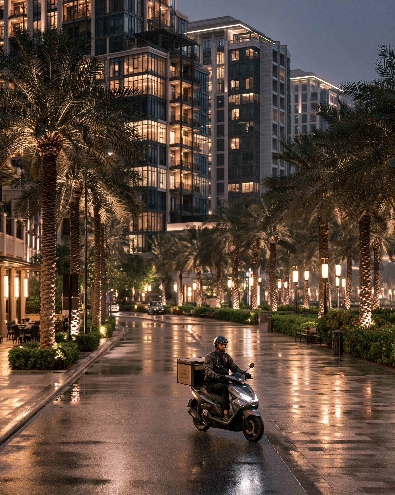

GCC • RESIDENCY • INVESTMENT
Long-term residency programs are becoming increasingly important across the Gulf region. Investors, entrepreneurs, skilled professionals and business owners are exploring options beyond traditional work permits.
The Gulf region continues attracting global talent through economic growth, tax advantages, business opportunities and high living standards.
Several GCC countries have introduced residency pathways designed to attract investors, entrepreneurs and highly skilled professionals.
The UAE remains the regional leader in long-term residency programs. Dubai and Abu Dhabi continue attracting investors, entrepreneurs, executives, property owners and specialized professionals.
The country's business ecosystem, international connectivity and lifestyle advantages make it one of the most attractive residency destinations in the GCC.
Saudi Arabia has expanded long-term residency options as part of its Vision 2030 strategy. The Kingdom is actively attracting investors, entrepreneurs and international talent.
Riyadh's rapid economic growth continues increasing interest in long-term residency opportunities.
Qatar continues developing pathways for investors and long-term residents while strengthening its appeal as a business and lifestyle destination.
Doha's infrastructure, healthcare system and economic stability remain key attractions.
Oman has introduced residency initiatives aimed at investors and individuals seeking long-term presence in the Sultanate.
Muscat's quality of life, affordability and natural environment appeal to many international residents.
Bahrain continues positioning itself as a business-friendly destination with residency options supporting investors, entrepreneurs and professionals.
Manama's financial sector and startup ecosystem remain major advantages.
Kuwait remains an important economic center in the GCC, although its residency framework differs from some neighboring countries.
Investors and professionals should monitor future developments as regional competition for talent increases.
Residency rules, eligibility requirements, fees and investment thresholds can change. Anyone considering residency or relocation should verify current requirements through official government sources before making decisions.
The GCC is becoming increasingly competitive in attracting global talent, entrepreneurs and investors. While the UAE currently leads the region, Saudi Arabia, Qatar, Oman and Bahrain are steadily expanding their appeal.
Choosing the right destination depends on business goals, lifestyle preferences, family needs and long-term plans.